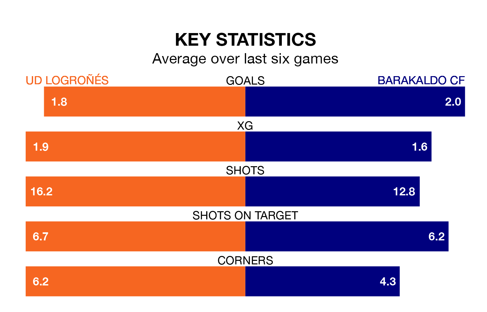

UD Logroñés host Barakaldo CF in Sunday's late match at the Estadio Nuevo Municipal Las Gaunas looking to bounce back from defeat last time out in the Segunda División RFEF Group 2.
Logroñés, who sit third in the league after 26 games, fell to a 2-1 away defeat to Arenas de Getxo on March 9.
They face a Barakaldo side who picked up a win in their last match, a 2-0 victory against Brea, and who sit second in the table.
With 54 goals in 26 games so far this season, Logroñés are the league's highest scorers with 2.1 goals per game. And they are conceding fewer than average, letting in 15 goals at a rate of 0.6 per game.
Barakaldo are also above average scorers, with 1.7 goals per game, compared to a league average of 1.1. They have conceded 0.5 goals per game.
In the last 10 years, Logroñés and Barakaldo have played each other on eight occasions. Logroñés won two of them, Barakaldo one, and they drew five times.
On average, Logroñés scored 0.6 goals and Barakaldo 0.5 in those matches.
Their last meeting was on November 5, when they played out a 1-1 draw.
The hosts are in reasonable form in the Segunda División RFEF Group 2, with four wins and two losses from their last six games.
With four wins and two draws over that period, the away team's form is slightly better – they have taken 14 points from 18, compared to Logroñés's 12.
Updated: 15:10 (UTC), 15/03/24